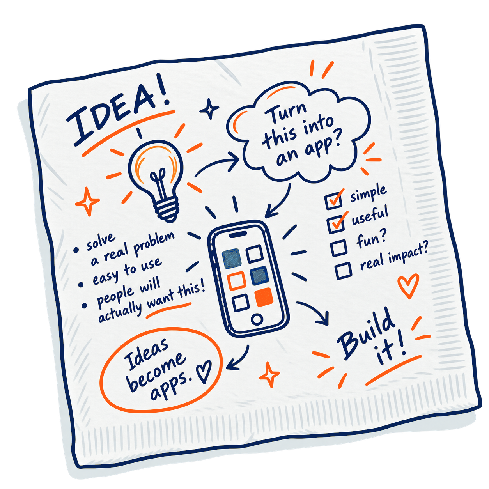
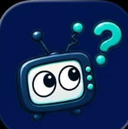

Ideas
Creative solutions that start with real problems.

CZieler Works · Web & mobile apps
Hi, I’m Carole, a software engineer with 25+ years of experience. I design and build web and mobile apps for individuals, small businesses and teams, from the first sketch to launch.
Creative solutions that start with real problems.
User-friendly apps built for everyday people.
Custom development that drives real results.
Built with care, curiosity, and a geek at heart.

Web and mobile apps, from a rough idea to a working product people can use.
Existing apps that are confusing or frustrating, made clear and easy to use.
UX, architecture, prototypes and technical planning before you commit to a build.
A short, paid first step. I review what you have and how your team works, then give you a plan and an hour estimate.
Each phase has a clear goal and an hour cap. You get weekly updates and approve each phase before the next one starts.
Bug fixes are included for 30 days after launch, with ongoing support available when you need it.

Your streaming watchlist. Log what you’re watching, where you’re watching it, and what’s next.
A growing set of responsive UI building blocks that make new apps faster to build and consistent to use.
A new SaaS tool in the works for teams who want to get more out of the tools they already use. More soon.
I’m Carole Zieler. I’ve spent more than 25 years building software, mentoring developers and turning half-formed ideas into things people rely on. My favorite part is making something complicated feel simple to use.
When I’m not coding, you’ll find me throwing a frisbee for Tessa, my mini Aussie (aka Potato), or watching the latest superhero movie.
One of those rare senior engineers who makes an entire team run better just by being on it. … She has an eye for polish and user experience that most backend-capable engineers simply don’t have.
One of the most dedicated, intentional, and proactive members of the team. … I would recommend her to any team wanting an engineer or manager who can make meaningful additions from day-one.
Send me a quick email about what you’re trying to build or fix, and I’ll get back to you as soon as possible.